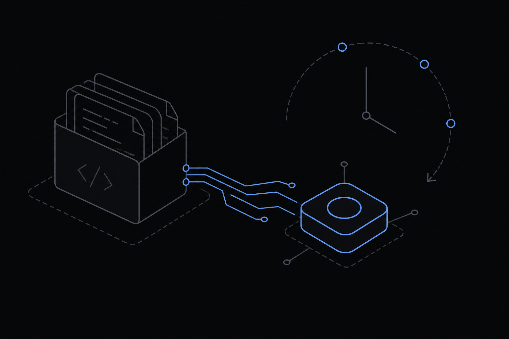
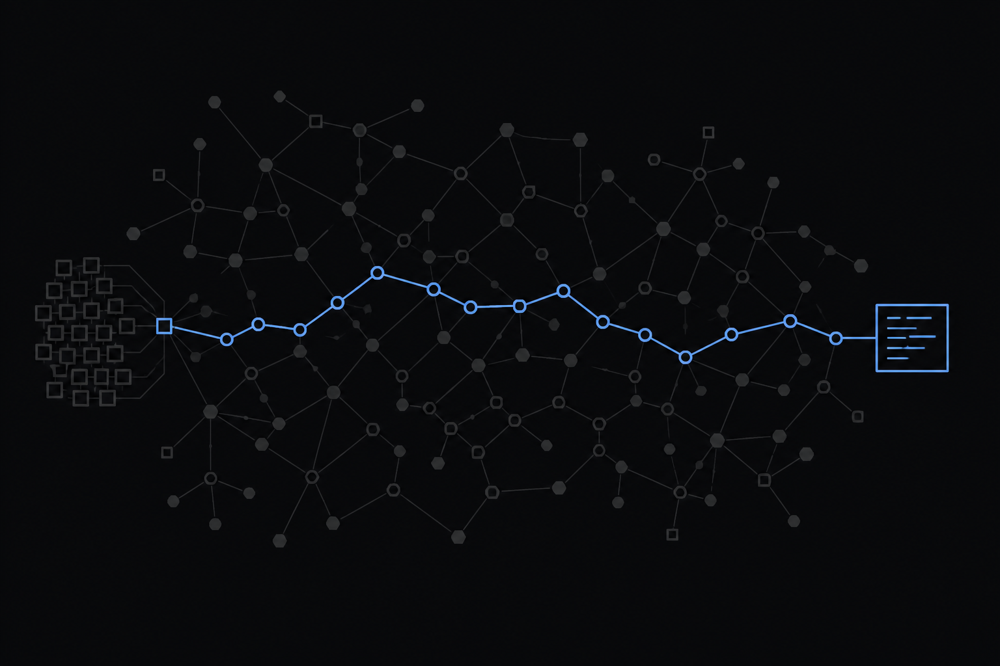
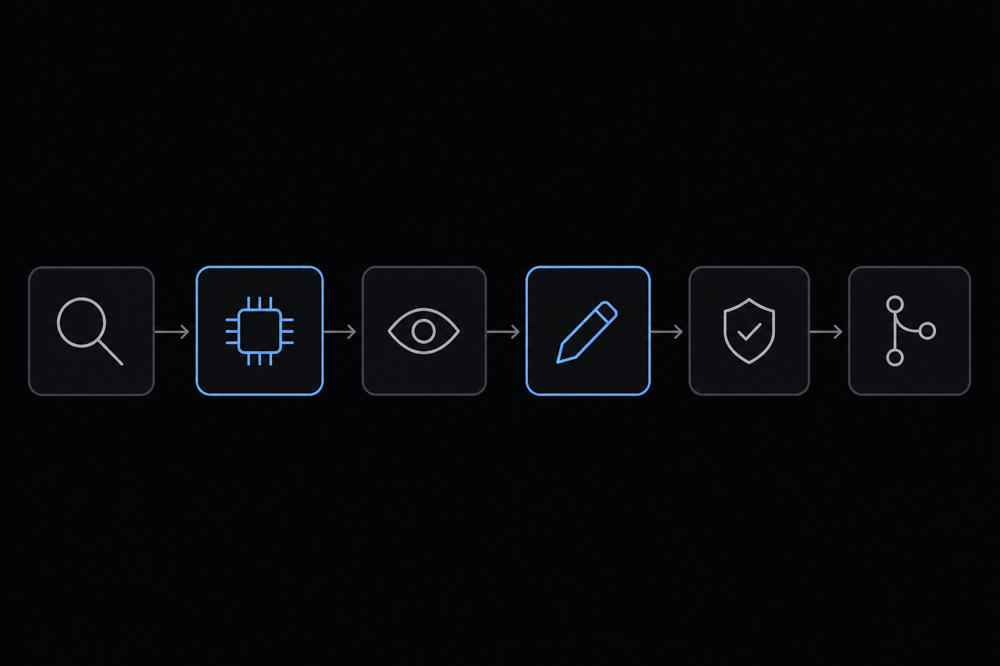
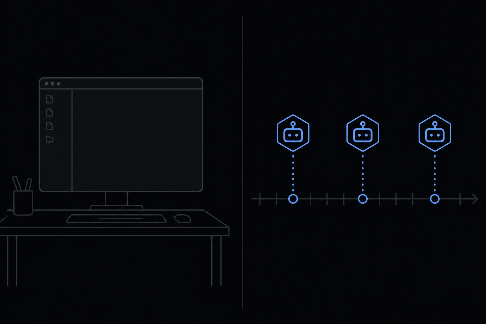

Cursor Field Engineer prototype
A Cursor SDK pipeline that scans, judges, patches, verifies, and opens a draft PR — with a human still on merge.

The problem

What I built
Secrets always escalate. Critical never auto-applies. Verify is allowed to undo the agent.

Why the SDK · then the working thing
npm run plan, then where Agent.create starts.
